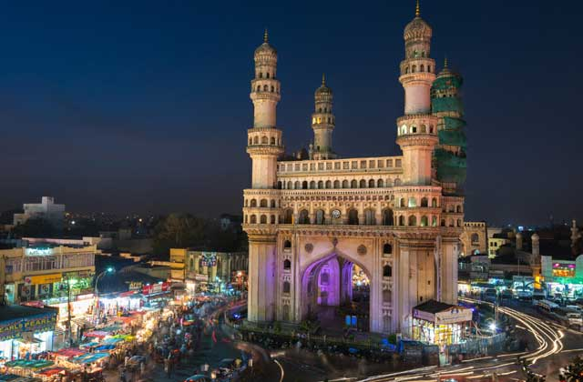

The Charminar is a mosque and monument located in Hyderabad, Telangana, India. Constructed in 1591, the
landmark is a symbol of Hyderabad and officially incorporated in the emblem of Telangana The Charminar's
long history includes the existence of a mosque on its top floor for more than 425 years. While both
historically and religiously significant, it is also known for its popular and busy local markets
surrounding the structure, and has become one of the most frequented tourist attractions in Hyderabad.
Charminar is also a site of numerous festival celebrations, such as Eid-ul-adha and Eid al-Fitr, as it is
adjacent to the city's main mosque, the Makkah Masjid.
The Charminar is situated on the east bank of Musi River. To the west lies the Laad Bazaar, and to the southwest
lies the richly ornamented granite Makkah Masjid. It is listed as an archaeological and architectural treasure
on the official list of monuments prepared by the Archaeological Survey of India. The English name is a
translation and combination of the Urdu words chār and minar or meenar, translating to "Four Pillars"; the
eponymous towers are ornate minarets attached and supported by four grand arches.